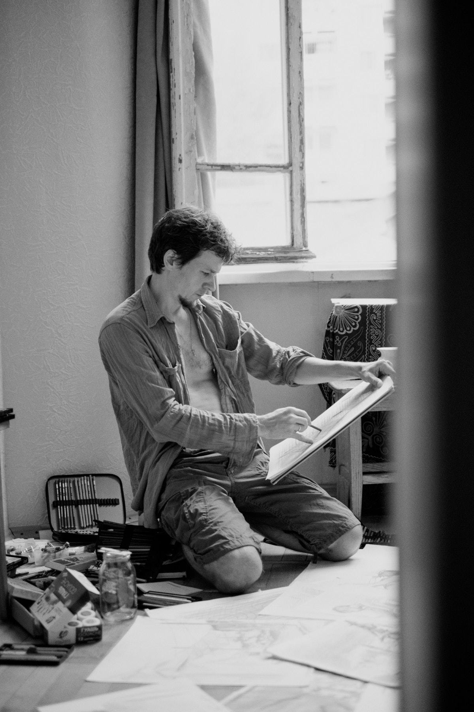
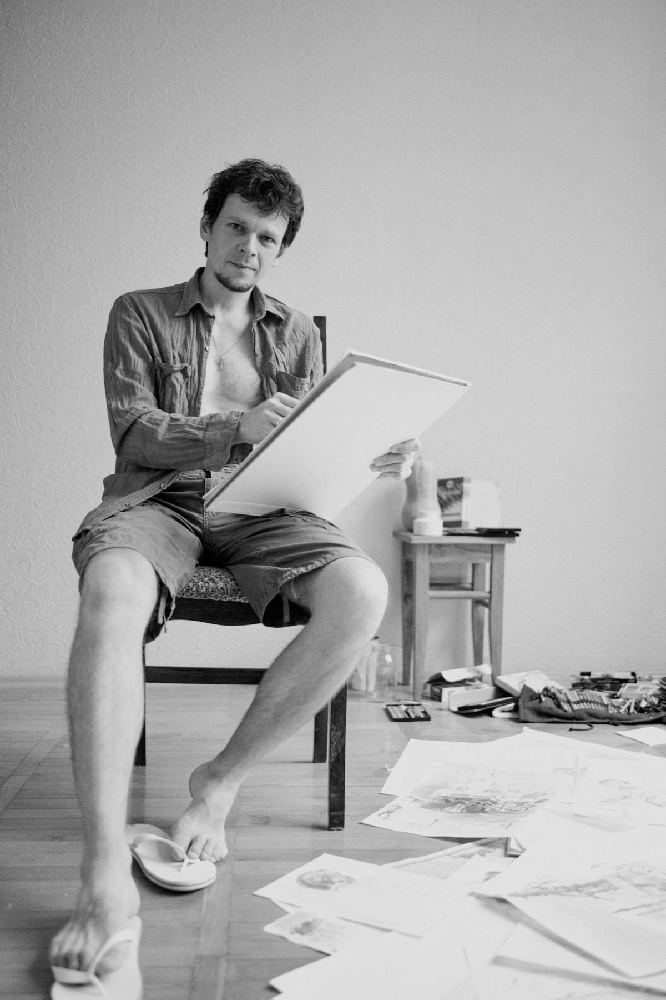
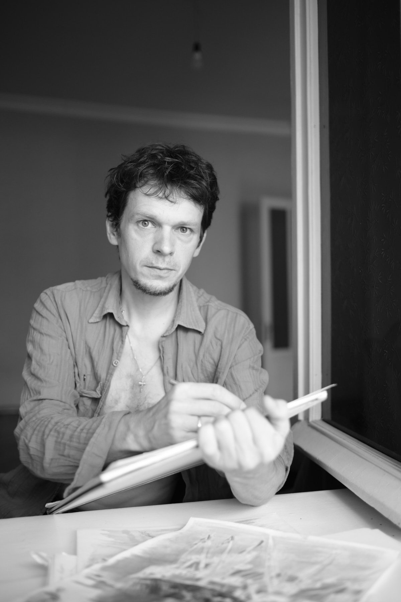
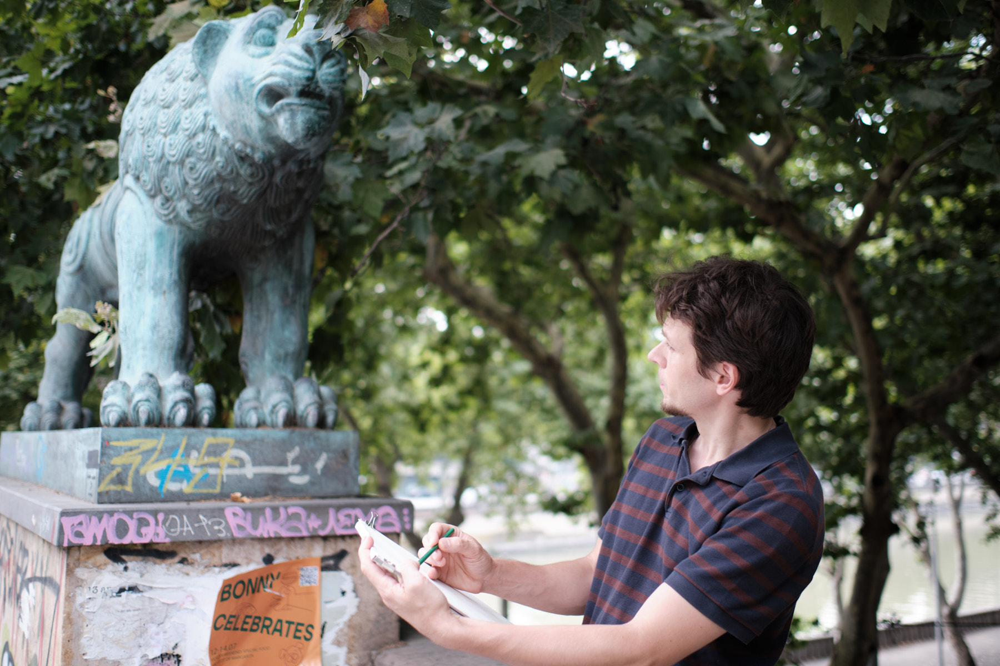

Project / Documentary Portrait
A documentary portrait of a young painter, photographed across multiple sessions in studio and on location in Tbilisi. The slow accretion of working hours: paper, pencil, the back of a hand, the river outside.



